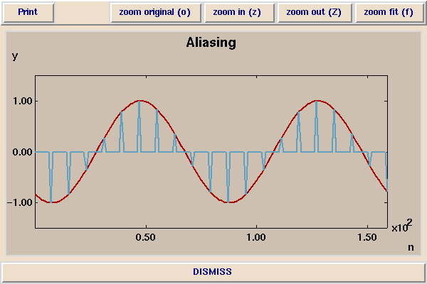
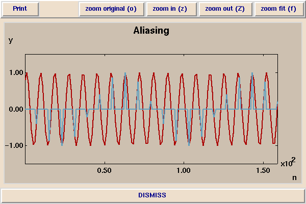

In the following picture, a sinusoid at 800 Hz is sampled at 8 kHz.

The samples are shown in blue, and the original waveform in red. Notice that there are ten samples per cycle. In the following picture, a sinusoid at 7200 Hz is also sampled at 8Hz:

The resulting samples are essentially identical to the samples of the 800 Hz sinusoid. It is impossible from the samples to tell the difference between the 800 Hz sinusoid and the 7200 Hz sinusoid. This phenomenon is called aliasing.
In this demonstration, we notice that as the frequency of the waveform that if sample a sinusoid which has a rising frequency, at some point, the frequency appears to stop rising and start falling. This happens when the frequency of the waveform we sample crosses half the sampling frequency (4 kHz).
Note that this is the same phenomenon that can make wagon wheels appear to be rolling backwords in films. Films sample an image at 24 frames per second. If the frequency of the wheel rotation gets fast enough, then the wheel will start to appear to roll backwards.